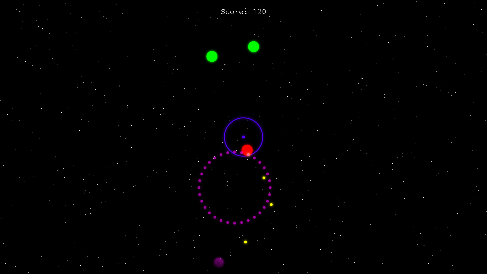

Jeux VideoPS
Plongez dans l'expérience rétro. Deux classiques réinventés, propulsés par une architecture CI/CD moderne.

Two Ships
Manœuvrez à travers le chaos. Précision et réflexes sont vos seuls alliés dans ce ballet spatial destructeur.
Lancer le Raid
Space Invaders
Défense périmétrale totale. Pivotez, visez, éliminez. Ils arrivent de partout, ne laissez aucune chance à l'envahisseur.
Engager le Combat